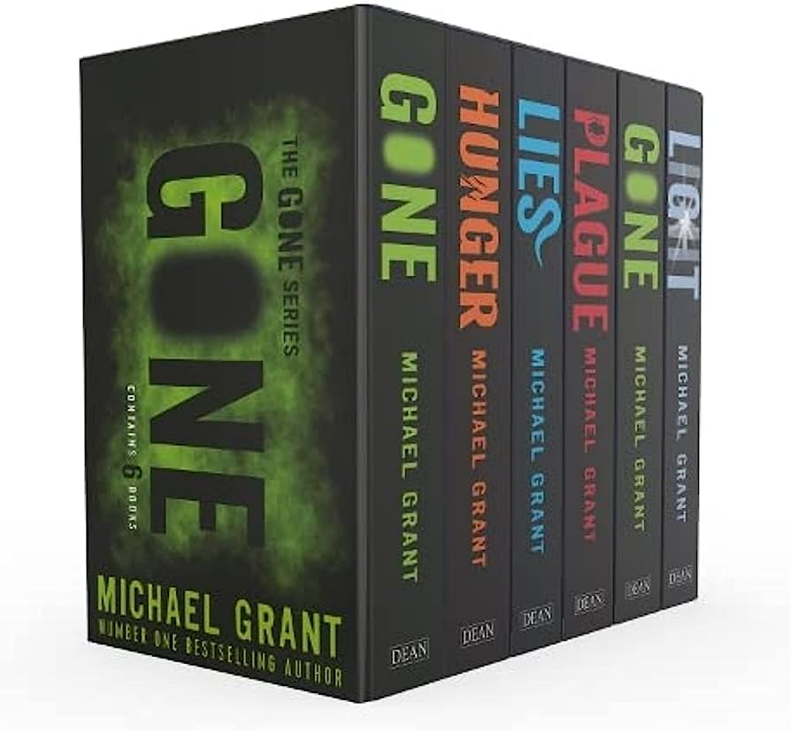
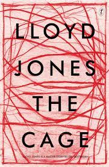

Video Games
I enjoy spending my time playing Video Games like Valoarant, or the Total War Series.
I feel like strategic games like these help in improving our problem solving skills, and teach us how to work and communicate in groups efficiently.

Reading Books
Reading fictions is another of my pass time activities. Recently i finished the book 'Hunger', which is the second installement in the Gone Series, by Michael Grant.

I also enjoy reading mystery and suspense filled books, as currently I am reading book called The Cage by Lloyd Jones which is about two strangers who are trapped within a cage,
and the mystery is all about who the strangers are, where they came from.

Sports
There are many sports I love to play, some of which are:
Cricket
Swimming
Horse riding
I have been playing and following cricket for as long as I can remember, it is the first sport I ever got into.
I joined the School Cricket Team in 8th Grade, when I used to be in Westminster, Sharjah, infortunely we didn't have any matches except for once when we played against parents.
I also played in a tournament of indoor cricket in my freshmen year of University.
I took swimming lessons when I was around 10, during my summer vacation, and after we moved to the UAE, we had a pool at the top of our apartement where i used to frequently go.
Now a days, i love to swim whenever i get the chance to, whether we are on a beach or at a farmhouse.
I took regular horse riding classes in 2019, but due to Covid-19, we had to cancel our membership.